Métricas Oficiales del Certamen
Cuadro de Honor — Proyectos Ganadores Oficiales
Nivel Media Superior
MeXquite: desarrollo de alternativas proteicas sustentables con mezquite y flor de colorín
Antiparasitario nutricional para ganado ovino
TalkinEyes: comunicación asistida con visión por computadora para pacientes con ELA
Nivel Superior
Identificación de compuestos bioactivos de Loeselia mexicana con potencial antitumoral
Percepciones sobre el bienestar psicosocial en pacientes pediátricos con cáncer
Esquite instantáneo liofilizado de maíz criollo bajo economía circular
Documentos Oficiales y Resultados (Descarga Directa)
Archivos PDF oficiales normativos con firma institucional listos para descarga inmediata:
Listado Oficial de Ganadores FEMECI 2026
Dictamen oficial con los 3 primeros lugares de Media Superior y 3 de Superior acreditados por la SECIHTI, ficha técnica de proyectos, participantes, asesores, resúmenes ejecutivos, firma y sello oficial.
Convocatoria Oficial FEMECI Puebla 2026
Bases completas oficiales aprobadas por la SECIHTI, categorías temáticas, requisitos metodológicos, lineamientos de registro y cronograma de evaluación.
Informe General y Evidencias
Memoria institucional de la feria: registro de los 79 proyectos en concurso, 30 de exhibición y acreditaciones.
Reglas de Operación FEMECI
Marco normativo aplicable para comités de ética, seguridad científica y deliberación colegiada de los jurados.
Galería Gráfica Oficial del Certamen
Registro fotográfico de la jornada institucional FEMECI Puebla 2026:
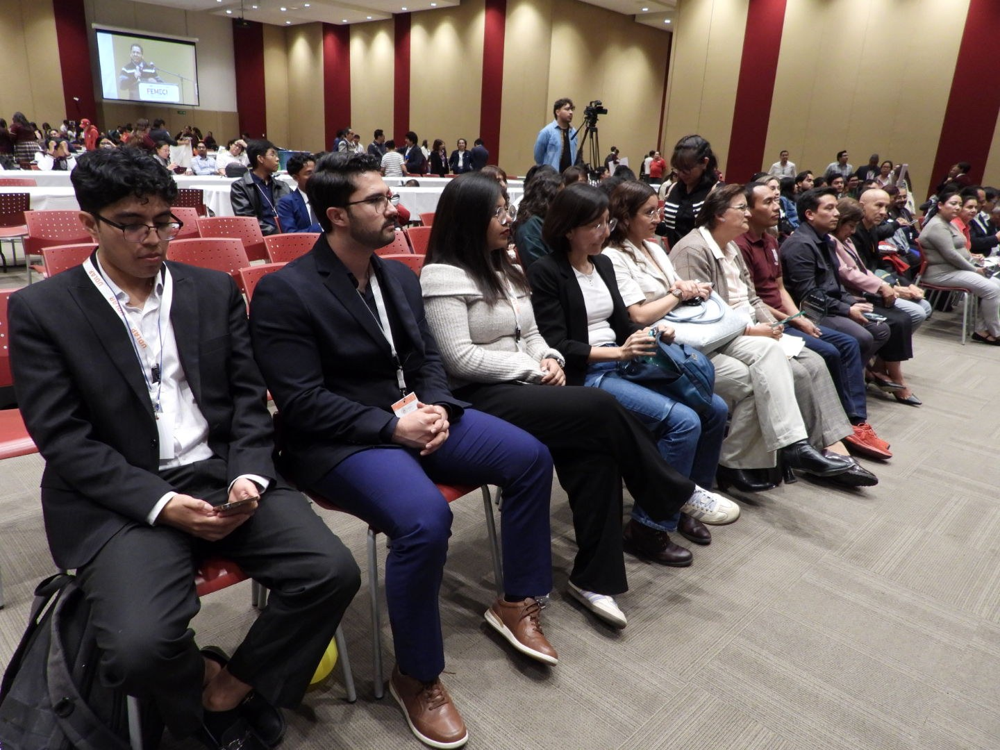
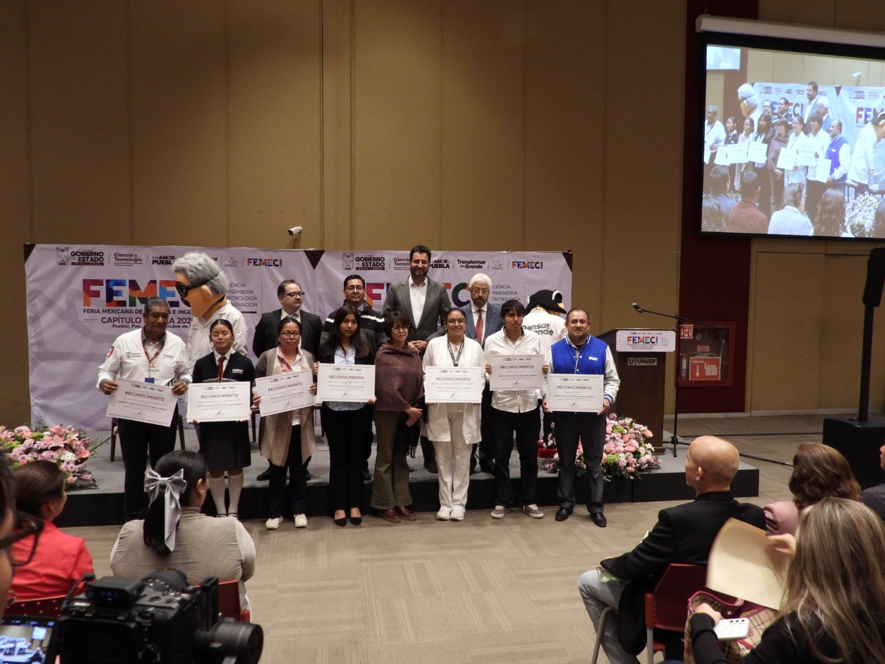
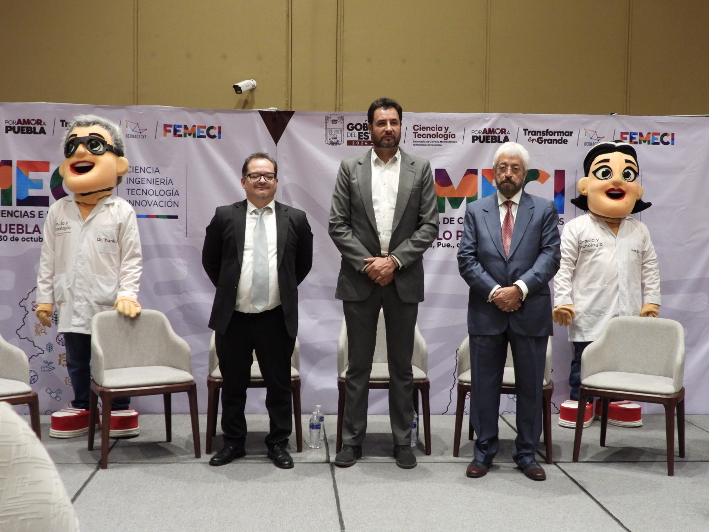
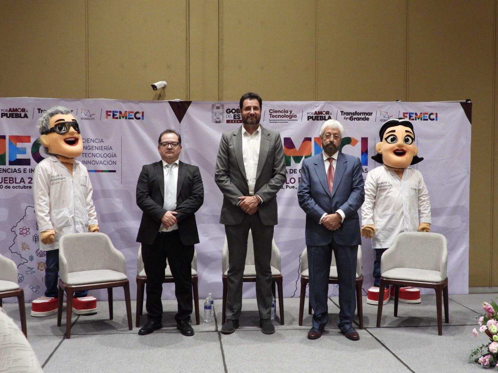
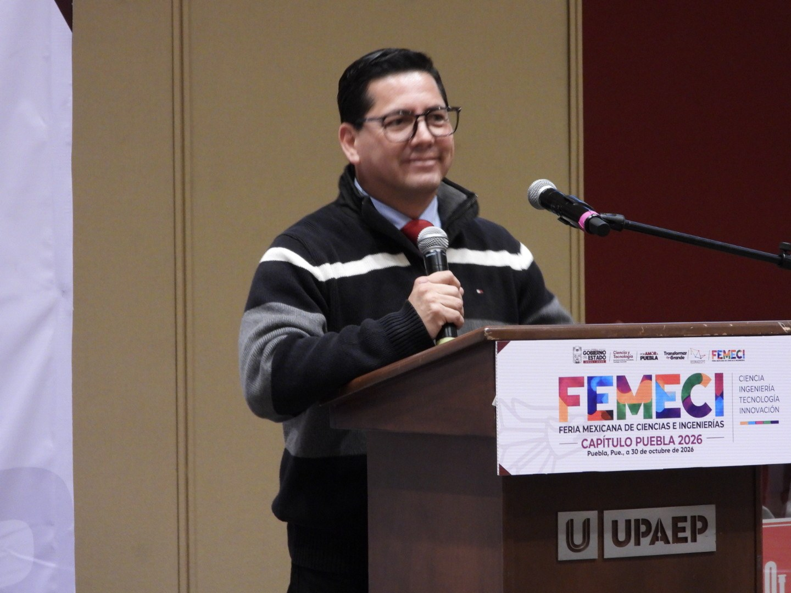
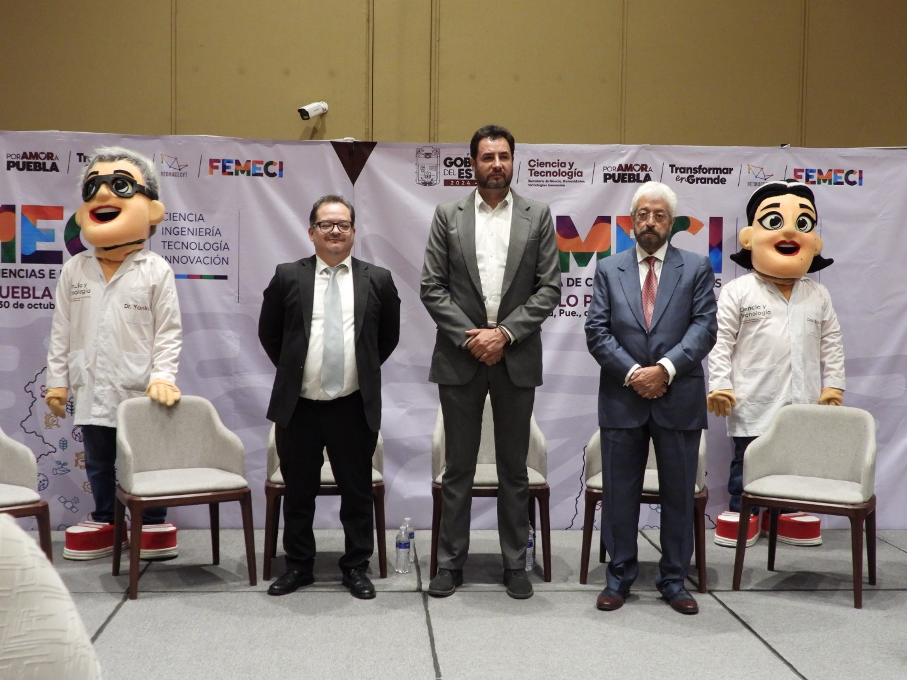
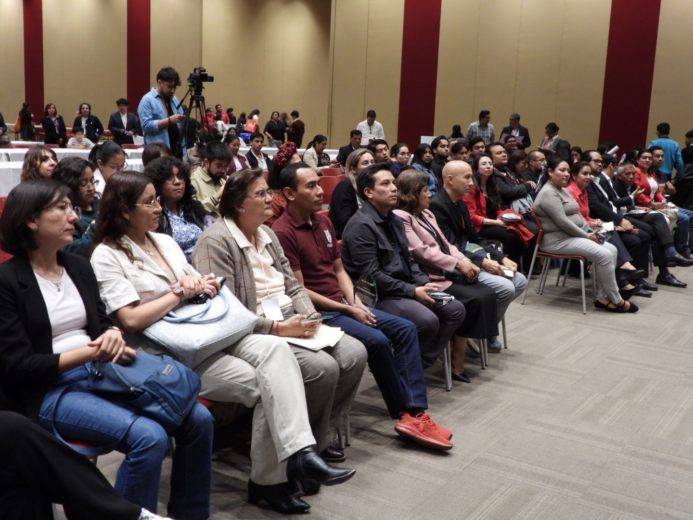
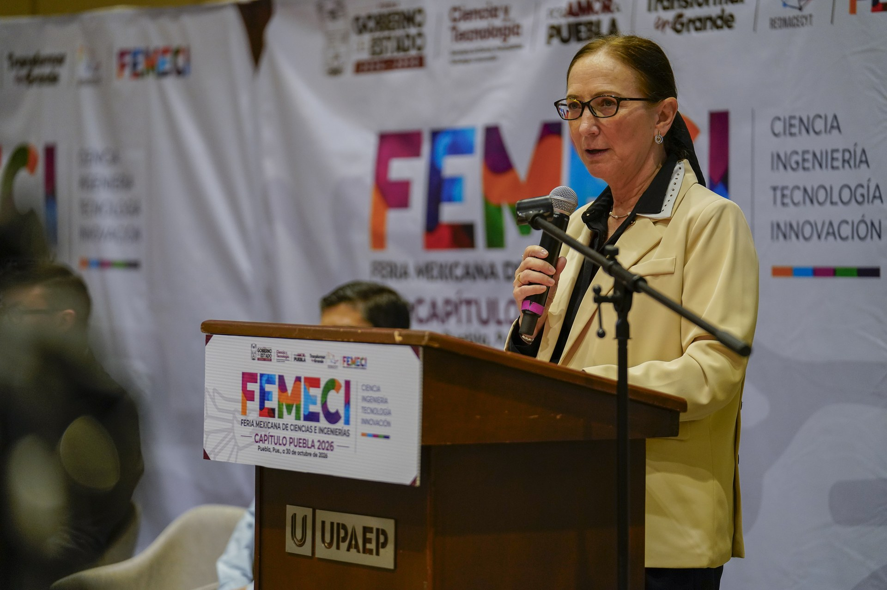
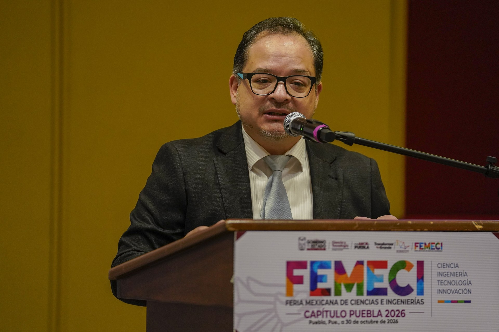
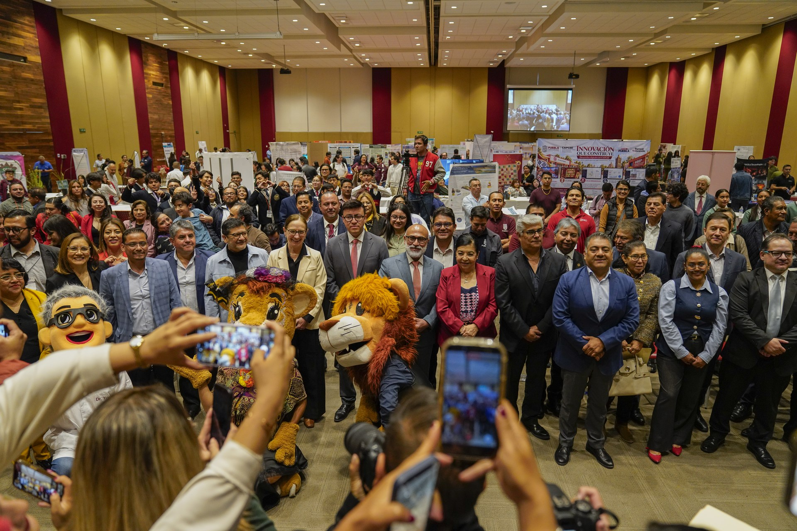
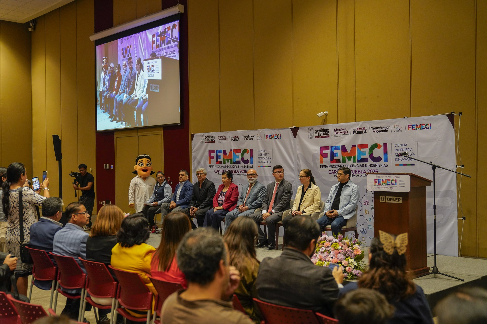
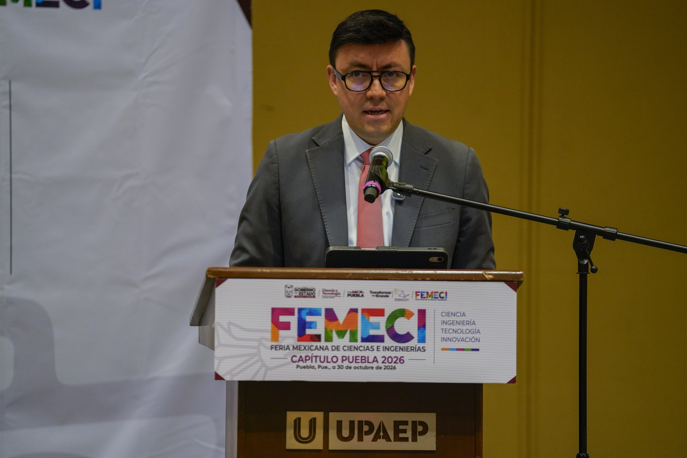
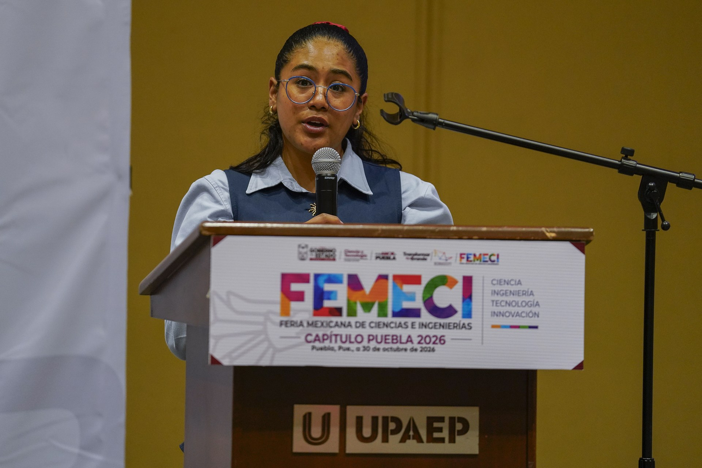
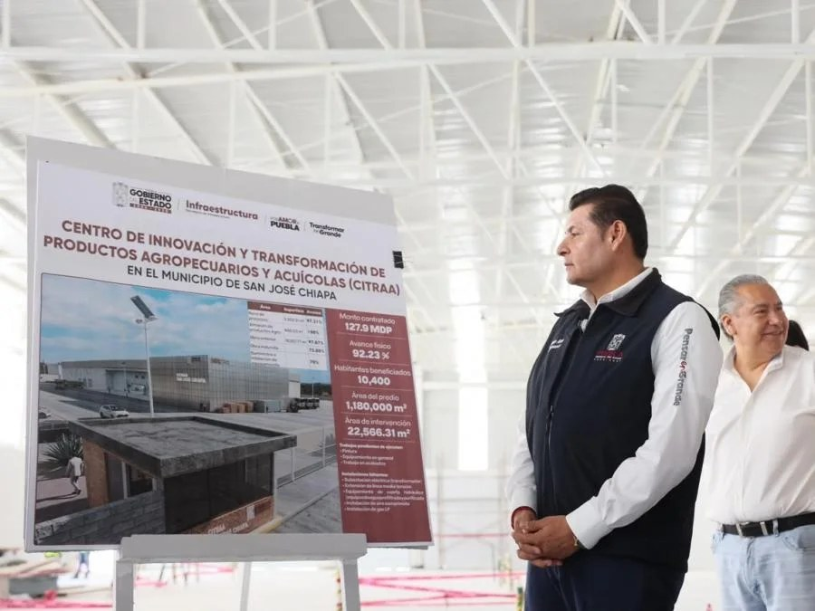
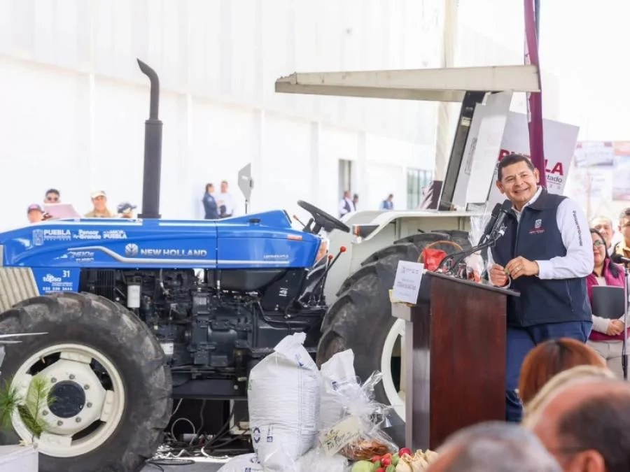
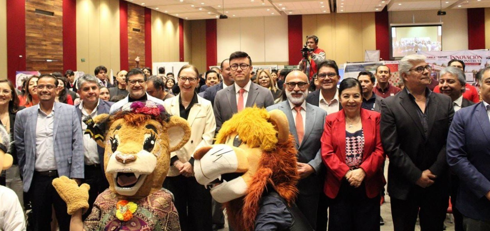
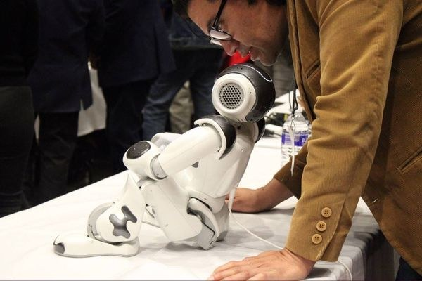
Cobertura Integral en Medios Informativos y Redes Sociales (9 Fuentes)
Relación completa de notas periodísticas, medios públicos y publicaciones en redes oficiales:
FEMECI 2026 coloca el talento joven en el centro de la ciencia. Crónica oficial del Gobierno del Estado sobre la participación estudiantil.
«#Entérate #Puebla #CentinelaNoticias 👨🏽🤝 FEMECI 2026 coloca el talento joven en el centro de la ciencia...»
«*FEMECI 2026 COLOCA EL TALENTO JOVEN EN EL CENTRO DE LA CIENCIA* - Participan estudiantes con proyectos de investigación...»
UPAEP abrió sus puertas al talento científico juvenil en Puebla. Perspectiva de la sede anfitriona y comités evaluadores.
Inauguran feria de ciencias e ingenierías 2026. Reseña de la apertura y mensaje a las 25 instituciones educativas participantes.
FEMECI reúne a estudiantes con proyectos científicos. Detalle de las deliberaciones colegiadas y fases hacia San Luis Potosí.
El talento joven en el centro de la ciencia. Plataforma estatal de fomento a vocaciones de investigación temprana.
Jóvenes investigadores de Puebla. Cobertura de los conversatorios temáticos de inteligencia artificial, ética y aprendizaje.
FEMECI 2026. Reseña editorial sobre el certamen científico coordinado por la SECIHTI en beneficio de la comunidad juvenil.